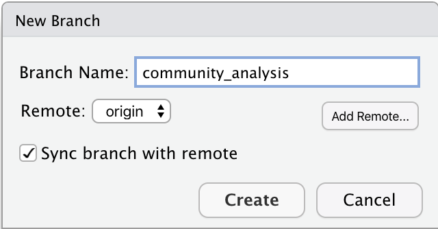

4 Collaborating with forks

4.1 What is a fork?
GitHub is useful for developing your own code, but at some point you might want to collaborate with other people on a project. Or you might come across a GitHub repository that you want to use as a starting point for your own work. In both cases forks are the way to go.
A fork is a copy of somebody’s GitHub repository. You can fork a repo and work independently of the original project. Or if you are collaborating with other people you can stay connected with the original repository via pull requests.
However, you cannot directly affect (or damage) the original project, which is somewhat less scary, right?
4.1.1 The workflow
To understand the workflow, let’s see how Angelina and Kingsley collaborate using GitHub (see Figure 4.1).
Kingsley owns a GitHub repo. Angelina forks this repo (1) and then clones is to her computer (2). Angelina develops code using branches and makes commits (3). Then she pushes these changes to her remote repo on GitHub (4) and makes a pull request to the original repo, which Kingsley merges (5).
From now on Angelina will fetch (6) and merge (7) the newest changes from upstream into her local repo and continue the workflow (3-5).

Figure 4.1: GitHub workflow using a fork
4.1.2 Forking with usethis
The easiest way to fork a repo on GitHub and clone it to your computer is with the usethis package.
Find the user name and repo name of the repo you want to fork.
To fork and clone the “kingsleyshacklebolt/dragon_study” repo, use
library(usethis)
create_from_github("kingsleyshacklebolt/dragon_study", fork = TRUE)This will
- fork the repo, creating a copy in your own GitHub account.
- clone your fork of the repo onto your computer.
By default, the clone will be put on your desktop.
You can copy the entire folder to somewhere more convenient, or set the
destdirargument. - set up the connections between the clone, your fork and the original repo. You can see these connections in the terminal with the command
git remote -v4.1.3 Fork a repo on GitHub
Sometimes if you only want to make a small change to a repo, it might be more convenient to make a fork on GitHub and make all the edits directy on GitHub.
To do this, go to GitHub, log into your account and go to the repository you want to fork.
Let us assume that Angelina wants to fork the magic_dragon repo from biostats. Click on the fork button on the top right of the webpage and wait until the repo is forked.

4.2 What is a branch?
You have forked a repository and are ready to start working on the project. Let’s talk about branches.
A branch lets you develop code, fix a problem, or test an idea without affecting the original project. A branch is created from an existing branch, usually from the main branch of the project. Note that main branch was previously named master branch, but removed because of the reference to slavery. Because of this change you might find references to the old name when looking for help elsewhere.
You can work on a branch, bravely develop code that works or does not work and it does not break the code on the main branch. Basically, you can experiment on your own.
If the idea did not work or you have another idea, the branch can be deleted and nobody ever needs to know about it. Make a new branch and start all over again. None of this will affect the original project.
If you are collaborating with other people and you have forked a repo you should not work on the main branch. When you change the main branch and later update your repo from the original repo, it will cause merge conflicts. Therefore, when collaborating with others, you always work on branches, and then you make a pull requests. The maintainer will then review the pull-request and maybe ask for changes in the current branch. When the maintainer is satisfied, the changes in the current branch are merge to the main branch (see 2.10).
Let’s have a look how to create, use and delete branches.
4.2.1 Make a new branch in RStudio
In RStudio, click on the New Branch button in the Git tab. Next to this button it will say on which branch you are. In this case it is main, which is the default branch.

Give the branch a short and informative name (no spaces) and click Create.

You are now in the newly created branch.

If you want to switch back to the main branch or another branch, click again on the box in the top corner to switch.
Note that you cannot switch to another branch if you have uncommited changes.
They need to be commited first.
4.2.2 Code, commit and push to origin in RStudio
Now is the time to work in a new or edit an existing file on the project. You can work the way it is described in section 2.6. Write or edit code, test it, commit regularly, add a useful commit message.
Once you are done with the task in this branch, test it and send your code upstream to the original repo, which is described in the next section.
4.2.3 Make a pull request on GitHub
Once you have pushed your branch back to the main branch you can make a pull request. A pull request is a request to the maintainer of the upstream repository to pull your code into the original repository.
Go to your fork on GitHub (not the upstream repo).
Click on the green box Compare & pull request which has appear at the top of the page.

Add a comment about your pull request and click Create pull request.

Once you have created your pull request, GitHub will check if there are any merge conflict.
A merge conflict can occur when two people are changing the same line in one file differently.
See 2.10 for how to deal with a merge conflict.
If no merge conflict occurs, GitHub will give green light for merging.
If there is a merge conflict, it has to be resolved before the file can be merged (see 2.10 Trouble shooting).

Now it’s time for you to relax, wait for the response of the repo maintainer and have some cake 🍰, you have earned it!
4.2.3.1 Excercise: make pull request
Let’s make a pull request together. Go to the magic_dragons repo that you forked above, or fork it now. Open the file called successfully forked.
Click on the main button to create a new branch. Type a name and click Create branch: new_name.
You are now working on the new branch. Click on the pencil symbol on the right side to edit the file. Add your name and scroll all the way to the bottom of the page.

Type a commit message and make sure you commit to the new branch you just made.

Go to the original magic_dragons repo on GitHub and click on the green button Compare & pull request and on the next page Create pull request

Now it’s time for you to relax, wait for the response of the repo maintainer and have some cake 🍰, you have earned it!
4.2.4 Repo maintainer accepts pull request (or not)
The maintainer of the original repository will then get notified about your pull request.

The maintainer has to evaluate your changes to the project and can make comments to specific parts of the code, or even start a review.
You will get a notification if changes are required and this can go forth and back for a while.

Eventually, the maintainer will merge the pull request and you will get a notification.

4.2.5 Update your fork
Once your pull request has been accepted, you have to update your fork to get the latest changes from upstream.
You can do this either on GitHub or in the terminal
4.2.5.1 On GitHub
Go to your fork on GitHub. Click the “Fetch upstream” link beneath the green “Code” button, then press “Fetch and Merge” in the popup.
Is your fork behind? You can now sync from the parent repo with just a single click! 🖱💥 pic.twitter.com/4Zx6OwVTxO
— GitHub (@github) May 6, 2021
Now go to RStudio and pull the updates to your computer. Unless you want to continue working on the same branch, you should now return to the main branch.

4.2.6 Delete branches
Once you have created a couple of branches, it will become difficult to track which branch you are still working on and which are old. Generally, you want to delete a branch when you are done with it.
To delete a branch locally type:
git branch -d community_analysisTo delete the branch remotely, type:
git push origin --delete community_analysis4.2.7 Trouble shooting
Check configurations in the Terminal
You might want to check the configurations of your repository. In the Terminal you can check the origin of your repo, which is from where you push and pull. If you have forked a repo it will also show you the upstream repo (see 4 Collaborating with forks and branches tutorial for more details). This will also show you if your origin is wrong or the upstream repo has not been set.
Go to the Terminal tab and type repo type:
git remote -vThe output will look like this:
origin git@github.com:angelinajohnson/magic_dragons.git (fetch)
origin git@github.com:angelinajohnson/magic_dragons.git (push)
upstream git@github.com:biostats-r/magic_dragons.git (fetch)
upstream git@github.com:biostats-r/magic_dragons.git (push)Handle a merge conflict
A merge conflict can occur when two people are changing the same line in one file differently.
The goal is to avoid such conflicts and a good strategy fo this is to commit often, work in small steps, push and pull/fetch regular and communicate with the people you are collaborating with. Merge conflicts can easily be avoided if you do not work in the same files.
But merge conflicts cannot always be avoided and should it happen that you have one in your pull request, you will get a message to resolve this conflict before the changes can be merge. First, do not panic and find the files that are conflicting.

The conflicting file is called dragon_analysis. Most likely somebody has changed the file in the meantime and you do not have the most recent version of code. Check the status of this file on the upstream repo. Fix the changes, so that they are not conflicting anymore, commit, push and make the pull request again. Now everything should work.
Prevent from pushing to main
We have already established that when you collaborate on a repo using a fork, never change the main branch. This can be difficult to remember, and there is a way to prevent from committing to main. Install the package usethis if you do not have it already.
install.packages("usethis")Then run this code in your console:
usethis::use_git_hook(
hook = "pre-commit",
script = '#!/bin/sh
branch="$(git rev-parse --abbrev-ref HEAD)"
if [ "$branch" = "main" ]; then
echo "You cannot commit directly to main branch"
exit 1
fi'
)From now on if you are trying to commit changes to main it will give you a warning message. If this happens, make a new branch, commit the changes and push.
Further reading
Happy Git provides instructions for how to getting started with Git, R and RStudio, explains the workflows and useful tips for when things go wrong. https://happygitwithr.com/
The Git flight rules are an exhaustive resource for what to do when things go wrong. https://github.com/k88hudson/git-flight-rules